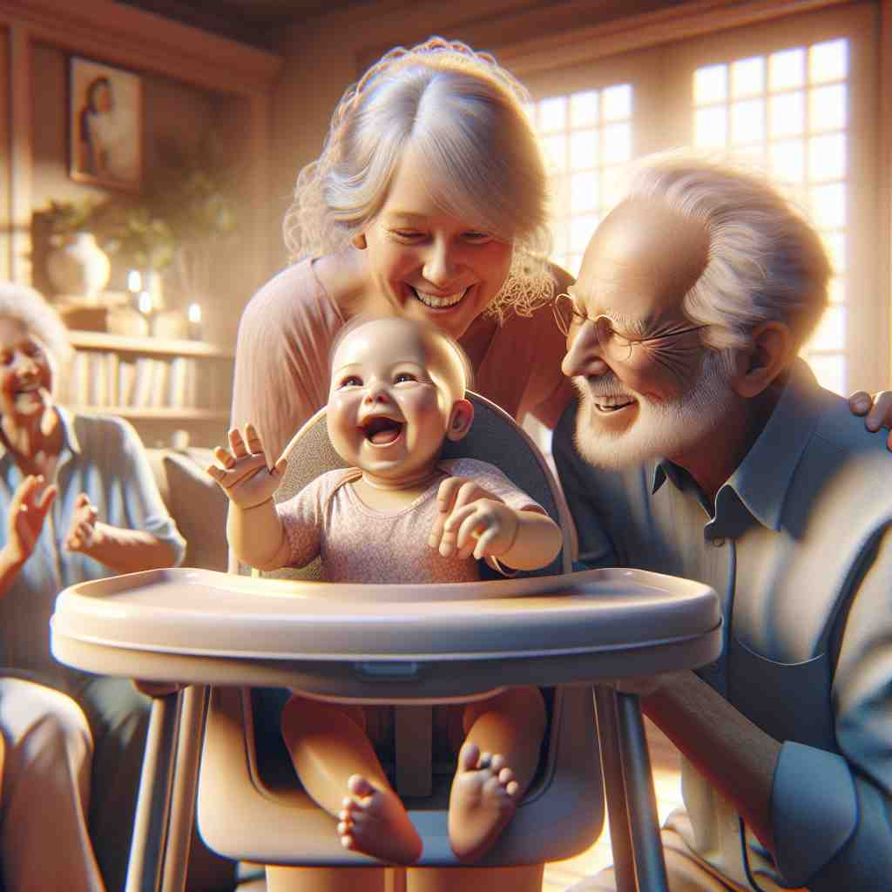
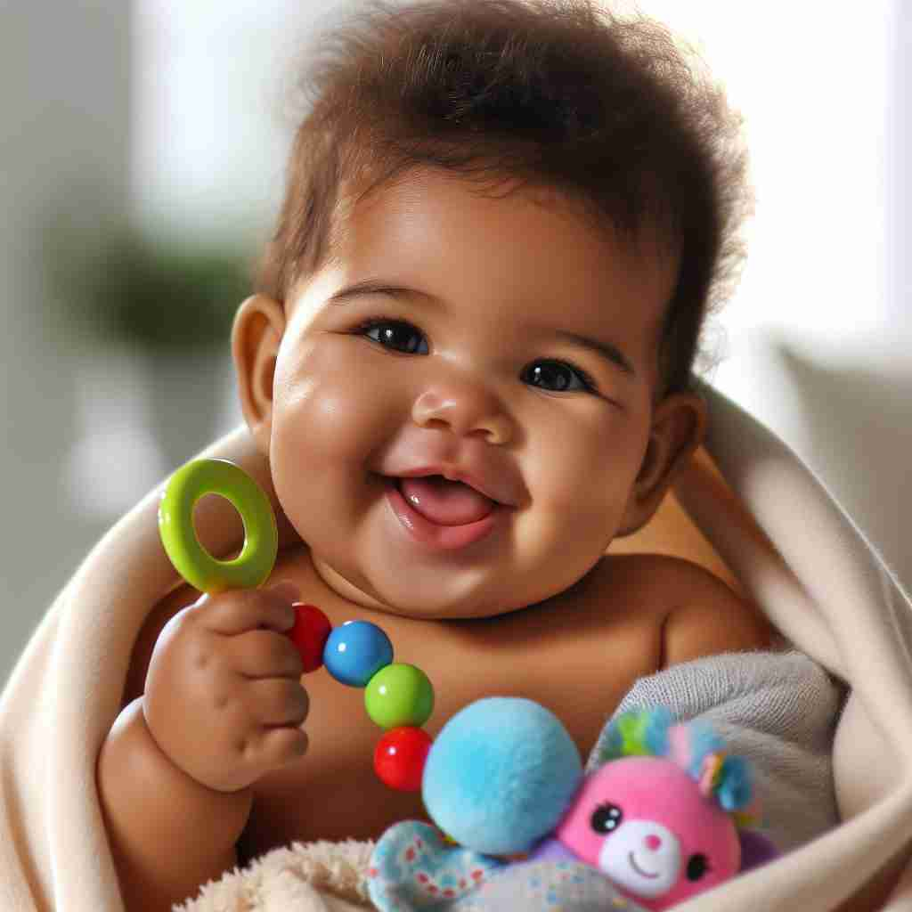

💬 The woman loves to hold the baby gently.
💬 The baby is crawling on the floor.

💬 The family loves to take care of the baby.

💬 The baby in a blanket is playing with a colorful toy.
🔈 ['beɪbɪ]
🗝️ n. a very young child or animal
🖼️ 在一个宁静的卧室里，一个新生婴儿躺在婴儿床上酣睡。她的小手轻轻握着，透过窗帘的阳光洒在她柔嫩的皮肤上，展现出'baby'作为非常年轻的孩子或动物的核心含义。
🔍 单词'baby'的核心含义是'婴儿'，这个概念涵盖了年幼、娇小、需要照顾和疼爱等特点。通过联想婴儿的这些特征，我们可以理解它的衍生含义：家庭中最年幼的成员、受宠爱的事物、过度呵护、亲昵的称呼，以及形容小型事物。记住婴儿的特点，就能轻松理解和记忆'baby'的多重含义。
💬 The woman loves to hold the baby gently.
💬 The baby is crawling on the floor.
💬 The family loves to take care of the baby.
💬 The baby in a blanket is playing with a colorful toy.
🌳 这个单词本身是一个完整的词，没有明显的词根、前缀或后缀分解。常用于指 "婴儿" 或 "幼小" 的事物。
💡 记住 "baby" 时，可以联想婴儿的柔软和小巧形象，将其与生活中见过的婴儿关联。
🗝️ n. the youngest member of a family or group
🖼️ 在一场家庭聚会上，所有人围坐在桌旁，笑声不断。小明是家里的最小成员，坐在妈妈的腿上，开心地摇晃双腿，每个人都温柔地称他为'家里的baby'，突出了'baby'作为家族或团体中最小成员的定义。
💬 He's the baby of the family.
❓ 延伸自最年幼的孩子概念
🗝️ n. a thing regarded with affection or as a pet project
🖼️ 在一个现代化的工作室里，一名设计师正在精心为自己心爱的项目作最后的润色。她柔和地抚摸着设计图，亲切地称之为'his baby'，说明了'baby'可以用于表达对某事物的喜爱或视为宠物项目的意义。
💬 This project is his baby.
❓ 类比婴儿受到的宠爱和关注
🗝️ v. to treat someone with excessive care or attention
🖼️ 在一个舒适的家庭客厅中，爸爸正小心翼翼地为生病的儿子倒茶、盖被子。他不停询问儿子需不需要再多些毯子，显得有些过度细心，展现了'baby'作为过度关心或关注某人的行为。
💬 Don't baby him; he needs to learn independence.
❓ 类比对婴儿的照顾方式
🗝️ n. a romantic partner
🖼️ 在一个浪漫的餐厅里，一对情侣正在分享晚餐。男友轻轻握住女友的手，温柔地喊她'baby'，让她脸上露出幸福的微笑，体现'baby'作为一种亲昵的称呼，即浪漫伴侣。
💬 Hey baby, what do you want for dinner?
❓ 表达亲昵，类比对婴儿的爱护
🗝️ adj. small or comparatively small
🖼️ 在一个五光十色的玩具店中，一个小女孩正站在货架前兴奋地看着各种迷你版玩具。她抓起一只'baby-sized'泰迪熊，拥在怀里，展现了'baby'用于形容小或相对较小的事物。
💬 We bought some baby carrots for the salad.
❓ 类比婴儿的体型特征